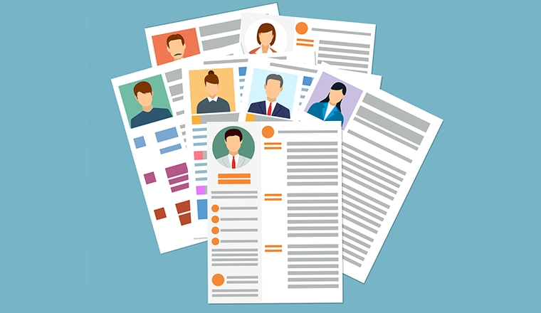
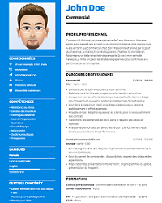
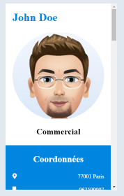
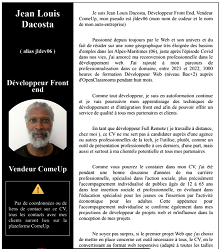
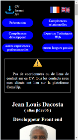

Avec un CV web
Convertissez votre CV format A4 au format web responsive

CV de John Doe format A4
Pour une véritable mise en ligne de votre CV

CV de John Doe format web responsive
jldev06 : un artisan du web à votre service

CV de jldev06 format A4
ce que je peux faire pour john Doe ou pour moi, je peux le faire pour vous.

CV de jldev06 format web responsive